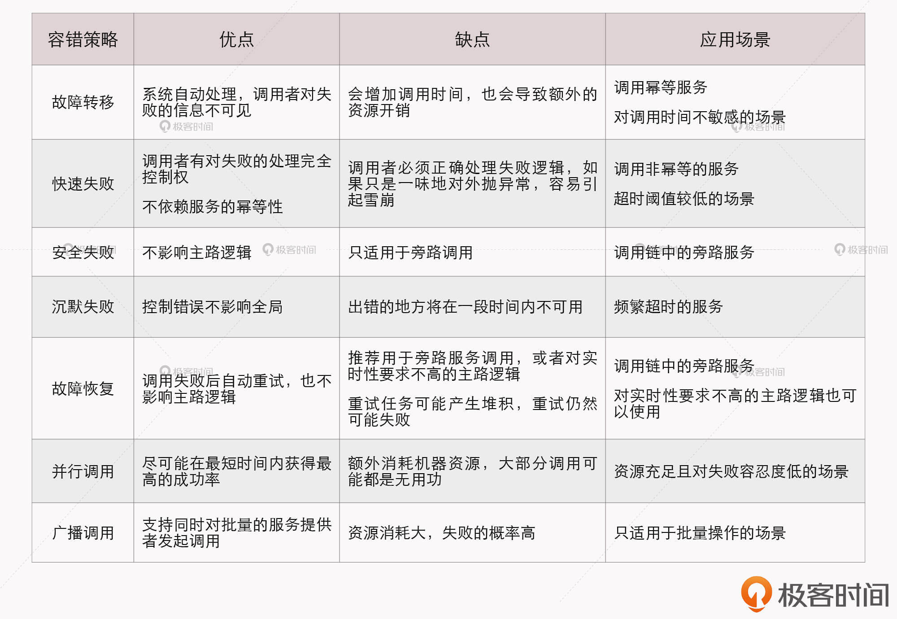

- 00 _导读 _ 什么是“The Fenix Project”？.md
- 00 开篇词 _ 如何构建一个可靠的分布式系统？.md
- 01 _ 原始分布式时代：Unix设计哲学下的服务探索.md
- 02 _ 单体系统时代：应用最广泛的架构风格.md
- 03 _ SOA时代：成功理论与失败实践.md
- 04 _ 微服务时代：SOA的革命者.md
- 05 _ 后微服务时代：跨越软件与硬件之间的界限.md
- 06 _ 无服务时代：“不分布式”云端系统的起点.md
- 07 _ 远程服务调用（上）：从本地方法到远程方法的桥梁.md
- 08 _ 远程服务调用（下）：如何选择适合自己的RPC框架？.md
- 09 _ RESTful服务（上）：从面向过程编程到面向资源编程.md
- 10 _ RESTful服务（下）：如何评价服务是否RESTful？.md
- 11 _ 本地事务如何实现原子性和持久性？.md
- 12 _ 本地事务如何实现隔离性？.md
- 13 _ 全局事务和共享事务是如何实现的？.md
- 14 _ 分布式事务之可靠消息队列.md
- 15 _ 分布式事务之TCC与SAGA.md
- 16 _ 域名解析系统，优化HTTP性能的第一步.md
- 17 _ 客户端缓存是如何帮助服务器分担流量的？.md
- 18 _ 传输链路，优化HTTP传输速度的小技巧.md
- 19 _ 如何利用内容分发网络来提高网络性能？.md
- 20 _ 常见的四层负载均衡的工作模式是怎样的？.md
- 21 _ 服务端缓存的三种属性.md
- 22 _ 分布式缓存如何与本地缓存配合，提高系统性能？.md
- 23 _ 认证：系统如何正确分辨操作用户的真实身份？.md
- 24 _ 授权（上）：系统如何确保授权的过程可靠？.md
- 25 _ 授权（下）：系统如何确保授权的结果可控？.md
- 26 _ 凭证：系统如何保证与用户之间的承诺是准确完整且不可抵赖的？.md
- 27 _ 保密：系统如何保证敏感数据无法被内外部人员窃取滥用？.md
- 28 _ 传输（上）：传输安全的基础，摘要、加密与签名.md
- 29 _ 传输（下）：数字证书与传输安全层.md
- 30 _ 验证：系统如何确保提交给服务的数据是安全的？.md
- 31 _ 分布式共识（上）：想用好分布式框架，先学会Paxos算法吧.md
- 32 _ 分布式共识（下）：Multi Paxos、Raft与Gossip，分布式领域的基石.md
- 33 _ 服务发现如何做到持续维护服务地址在动态运维中的时效性？.md
- 34 _ 路由凭什么作为微服务网关的基础职能？.md
- 35 _ 如何在客户端实现服务的负载均衡？.md
- 36 _ 面对程序故障，我们该做些什么？.md
- 37 _ 要实现某种容错策略，我们该怎么做？.md
- 38 _ 限流的目标与模式.md
- 39 _ 如何构建零信任网络安全？.md
- 40 _ 如何实现零信任网络下安全的服务访问？.md
- 41 _ 分布式架构中的可观测到底说的是什么？.md
- 42 _ 分析日志真的没那么简单.md
- 43 _ 一个完整的分布式追踪系统是什么样子的？.md
- 44 _ 聚合度量能给我们解决什么问题？.md
- 45 _ 模块导学：从微服务到云原生.md
- 46 _ 容器的崛起（上）：文件、访问、资源的隔离.md
- 47 _ 容器的崛起（下）：系统、应用、集群的封装.md
- 48 _ 以容器构建系统（上）：隔离与协作.md
- 49 _ 以容器构建系统（下）：韧性与弹性.md
- 50 _ 应用为中心的封装（上）：Kustomize与Helm.md
- 51 _ 应用为中心的封装（下）：Operator与OAM.md
- 52 _ Linux网络虚拟化（上）：信息是如何通过网络传输被另一个程序接收到的？.md
- 53 _ Linux网络虚拟化（下）：Docker所提供的容器通讯方案有哪些？.md
- 54 _ 容器网络与生态：与CNM竞争过后的CNI下的网络插件生态.md
- 55 _ 谈谈Kubernetes的存储设计理念.md
- 56 _ Kubernetes存储扩展架构：一个真实的存储系统如何接入或移除新存储设备？.md
- 57 _ Kubernetes存储生态系统：几种有代表性的CSI存储插件的实现.md
- 58 _ Kubernetes的资源模型与调度器设计.md
- 59 _ 透明通讯的涅槃（上）：通讯的成本.md
- 60 _ 透明通讯的涅槃（下）：控制平面与数据平面.md
- 61 _ 服务网格与生态：聊聊服务网格的两项标准规范.md
- 63 _ 基于Spring Boot的单体架构.md
- 64 _ 基于Spring Cloud的微服务架构.md
- 65 _ 基于Kubernetes的微服务架构.md
- 66 _ 基于Istio的服务网格架构.md
- 67 _ 基于云计算的无服务架构.md
- 春节特别放送（上）_ 有的放矢，事半功倍.md
- 春节特别放送（下）_ 积累沉淀，知行合一.md
- 用户故事 _ 詹应达：持续成长，不惧未来.md
- 结束语 _ 程序员之路.md
- 结课测试 _ 一套习题，测出你的掌握程度.md
36 _ 面对程序故障，我们该做些什么？
你好，我是周志明。接下来的两节课，我们一起来学习服务的容错性设计这个话题。
“容错性设计”（Design for Failure）是微服务的另一个核心原则，也是我在这门课中反复强调的开发观念的转变。
不过，虽然已经有了一定的心理准备，但在首次将微服务架构引入实际生产系统时，在服务发现、网关路由等支持下，踏出了服务化的第一步以后，我们还是很可能会经历一段阵痛期。随着拆分出的服务越来越多，随之而来的，我们也会面临以下两个问题的困扰：
- 某一个服务的崩溃，会导致所有用到这个服务的其他服务都无法正常工作，一个点的错误经过层层传递，最终波及到调用链上与此有关的所有服务，这便是雪崩效应。如何防止雪崩效应，便是微服务架构容错性设计原则的具体实践，否则服务化程度越高，整个系统反而越不稳定。
- 服务虽然没有崩溃，但由于处理能力有限，面临超过预期的突发请求时，大部分请求直至超时都无法完成处理。这种现象产生的后果跟交通堵塞是类似的，如果一开始没有得到及时地治理，后面就会需要很长时间才能使全部服务都恢复正常。
这两个问题，就是“流量治理”这个话题要解决的了。在这个小章节，我们将围绕着如何解决这两个问题，提出服务容错、流量控制、服务质量管理等一系列解决方案。
当然了，这些措施并不是孤立的，它们相互之间存在很多联系，其中的许多功能还必须与咱们之前学习过的服务注册中心、服务网关、负载均衡器配合才能实现。理清楚了这些技术措施背后的逻辑链条，我们就找到了理解它们工作原理的捷径。
接下来，我们就从服务容错这个解决方案学起吧。
服务容错
Martin Fowler与James Lewis提出的“微服务的九个核心特征”是构建微服务系统的指导性原则，但不是技术规范，并没有严格的约束力。在实际构建系统时候，其中多数特征可能会有或多或少的妥协，比如分散治理、数据去中心化、轻量级通讯机制、演进式设计，等等。但也有一些特征是无法做出妥协的，其中典型的就是今天我们讨论的主题：容错性设计。
容错性设计不能妥协的原因在于，分布式系统的本质是不可靠的，一个大的服务集群中，程序可能崩溃、节点可能宕机、网络可能中断，这些“意外情况”其实全部都在“意料之中”。原本信息系统设计成分布式架构的主要动力之一，就是提升系统的可用性，最低限度也必须保证将原有系统重构为分布式架构之后，可用性不出现倒退才行。
如果说，服务集群中出现任何一点差错都能让系统面临“千里之堤溃于蚁穴”的风险，那么分布式恐怕就根本没有机会成为一种可用的系统架构形式了。
容错策略
那在实践中怎么落实容错性设计这条原则呢？除了思想观念上转变过来，正视程序必然是会出错的，对它进行有计划的防御之外，我们还必须了解一些常用的容错策略和容错设计模式，来指导具体的设计与编码实践。
那怎么理解容错策略和容错设计模式呢？其实，容错策略，指的是“面对故障，我们该做些什么”；而容错设计模式，指的是“要实现某种容错策略，我们该如何去做”。
所以，接下来我们先一起学习7种常见的容错策略，包括故障转移、快速失败、安全失败、沉默失败、故障恢复、并行调用和广播调用，然后下一讲我们再学习几种被实践证明有效的服务容错设计模式。
第一种容错策略，是故障转移（Failover）。
高可用的服务集群中，多数的服务，尤其是那些经常被其他服务依赖的关键路径上的服务，都会部署多个副本。这些副本可能部署在不同的节点（避免节点宕机）、不同的网络交换机（避免网络分区），甚至是不同的可用区（避免整个地区发生灾害或电力、骨干网故障）中。
故障转移是指，如果调用的服务器出现故障，系统不会立即向调用者返回失败结果，而是自动切换到其他服务副本，尝试其他副本能否返回成功调用的结果，从而保证了整体的高可用性。
故障转移的容错策略应该有一定的调用次数限制，比如允许最多重试三个服务，如果都发生报错，那还是会返回调用失败。引入调用次数的限制，不仅是因为重试有执行成本，更是因为过度的重试反而可能让系统处于更加不利的状况。
我们看一个例子。现在有Service A → Service B → Service C这么一条调用链。假设A的超时阈值为100毫秒，而B调用C需要60毫秒，然后不幸失败了，这时候做故障转移其实已经没有太大意义了。因为即使下一次调用能够返回正确结果，也很可能同样需要耗费60毫秒的时间，时间总和就已经超过了Service A的超时阈值。所以，在这种情况下故障转移反而对系统是不利的。
第二种容错策略，是快速失败（Failfast）。
有一些业务场景是不允许做故障转移的，因为故障转移策略能够实施的前提，是服务具有幂等性。那对于非幂等的服务，重复调用就可能产生脏数据，引起的麻烦远大于单纯的某次服务调用失败。这时候，就应该把快速失败作为首选的容错策略。
比如，在支付场景中，需要调用银行的扣款接口，如果该接口返回的结果是网络异常，那程序很难判断到底是扣款指令发送给银行时出现的网络异常，还是银行扣款后给服务返回结果时出现的网络异常。为了避免重复扣款，此时最恰当的方案就是尽快让服务报错并抛出异常，坚决避免重试，由调用者自行处理。
第三种容错策略，是安全失败（Failsafe）。
在一个调用链路中的服务，通常也有主路和旁路之分，并不见得每个服务都是不可或缺的，属于旁路逻辑的一个显著特点是，服务失败了也不影响核心业务的正确性。比如，开发基于Spring管理的应用程序时，通过扩展点、事件或者AOP注入的逻辑往往就属于旁路逻辑，典型的有审计、日志、调试信息，等等。
属于旁路逻辑的另一个显著特征是，后续处理不会依赖其返回值，或者它的返回值是什么都不会影响后续处理的结果。比如只是将返回值记录到数据库，并不使用它参与最终结果的运算。
对这类逻辑，一种理想的容错策略是，即使旁路逻辑调用失败了，也当作正确来返回，如果需要返回值的话，系统就自动返回一个符合要求的数据类型的对应零值，然后自动记录一条服务调用出错的日志备查即可。这种容错策略，被称为安全失败。
第四种容错策略，是沉默失败（Failsilent）。
如果大量的请求需要等到超时（或者长时间处理后）才宣告失败，很容易因为某个远程服务的请求堆积而消耗大量的线程、内存、网络等资源，进而影响到整个系统的稳定性。
面对这种情况，一种合理的失败策略是当请求失败后，就默认服务提供者一定时间内无法再对外提供服务，不再向它分配请求流量，并将错误隔离开来，避免对系统其他部分产生影响。这种容错策略，就被称为沉默失败。
第五种容错策略，是故障恢复（Failback）。
故障恢复一般不单独存在，而是作为其他容错策略的补充措施。在微服务管理框架中，如果设置容错策略为故障恢复的话，通常默认会采用快速失败加上故障恢复的策略组合。
故障恢复是指，当服务调用出错了以后，将该次调用失败的信息存入一个消息队列中，然后由系统自动开始异步重试调用。
从这个定义中也可以看出，故障恢复策略，一方面是尽力促使失败的调用最终能够被正常执行，另一方面也可以为服务注册中心和负载均衡器及时提供服务恢复的通知信息。很显然，故障恢复也要求服务必须具备幂等性，由于它的重试是后台异步进行，即使最后调用成功了，原来的请求也早已经响应完毕。所以，故障恢复策略一般用于对实时性要求不高的主路逻辑，也适合处理那些不需要返回值的旁路逻辑。
为了避免在内存中的异步调用任务堆积，故障恢复与故障转移一样，也应该有最大重试次数的限制。
故障转移、快速失败、安全失败、沉默失败和故障恢复这5种容错策略的英文，都是以“Fail”开头的，它们有一个共同点，都是针对调用失败时如何进行弥补的。接下来，咱们要学习的并行调用和广播调用这两种策略，则是在调用之前就开始考虑如何获得最大的成功概率。
第六种容错策略，是并行调用（Forking）。
并行调用策略，是指一开始就同时向多个服务副本发起调用，只要有其中任何一个返回成功，那调用便宣告成功。这种策略是在一些关键场景中，使用更高的执行成本换取执行时间和成功概率的策略。
这种处理思路，其实对应的就是，咱们在日常生活中，对一些重要环节采取的“双重保险”或者“多重保险”的处理思路。
第七种容错策略，是广播调用（Broadcast）。
广播调用与并行调用是相对应的，都是同时发起多个调用，但并行调用是任何一个调用结果返回成功便宣告成功，而广播调用则是要求所有的请求全部都成功，才算是成功。
也就是说，对于广播调用来说，任何一个服务提供者出现异常都算调用失败。因此，广播调用通常被用于实现“刷新分布式缓存”这类的操作。
小结
今天这一讲，我们学习了故障转移、快速失败、安全失败、沉默失败、故障恢复、并行调用和广播调用，一共7种容错策略。
其实，容错策略并不是计算机领域独有的，在交通、能源、航天等非常多的领域都有容错性设计，也会使用到上面这些策略，并在自己的行业领域中进行解读与延伸。
这里，我把今天讲到的7种容错策略进行了一次对比梳理，你可以在下面的表格中看到它们的优缺点和应用场景。

一课一思
你在实际工作中使用过哪种容错策略，是要用它来解决什么问题的呢？你能试着说说它是如何实现的吗？
欢迎在留言区分享你的答案。如果你觉得有收获，欢迎你把今天的内容分享给更多的朋友。
© 2019 - 2023 Liangliang Lee. Powered by gin and hexo-theme-book.